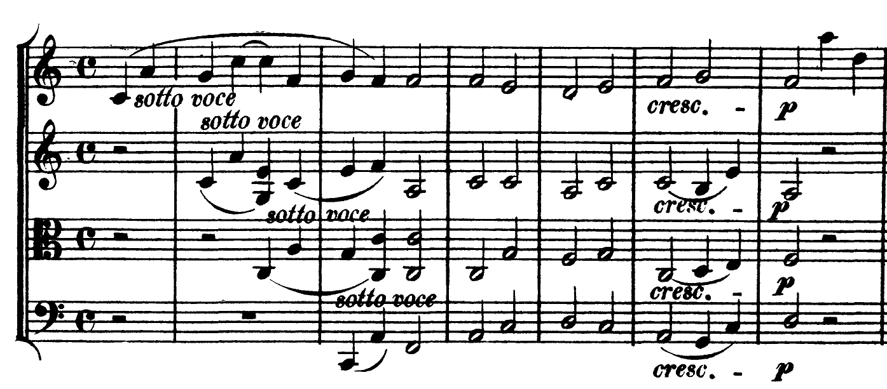

Piano 1 · Bb. 16–27: l’emersione, per collezioni sempre più complete

Dalla b. 16 (Peu à peu sortant de la brume) le collezioni si succedono con un ordine preciso. Sopra il pedale di si (bb. 16–18) le altezze appartengono alla pentatonica si–do♯–re♯–fa♯–sol♯; dalla b. 19, sopra il mi♭ grave, alla pentatonica mi♭–fa–sol–si♭–do; dalla b. 22, sopra la quinta sol1–re2–sol2 della b. 1, a una collezione su sol che, con il fa naturale, si completa nel misolidio. Giannetta descrive questi due passaggi come «cadenze esatonali»: la prima (bb. 18–19) è segnata dal salto di quarta diminuita del basso si–mi♭, la seconda (bb. 21–22) dal salto di terza maggiore mi♭–sol; i tre suoni toccati dal basso, si, mi♭ e sol, appartengono a una stessa scala per toni interi, benché nessuna delle collezioni coinvolte sia esatonale («Le transizioni modali nella musica di Claude Debussy», Rivista di Analisi e Teoria Musicale, 2012/1, pp. 42–43). Il dato spiega il tipo di arrivo: il basso descrive una triade aumentata, si–mi♭–sol, e ogni suo spostamento cambia la collezione senza passare per una dominante. Le gamme impiegate crescono intanto da cinque a sette suoni (Carrozzo, p. 344), e la crescita delle altezze disponibili accompagna quella della dinamica.
Giannetta chiama così il passaggio da un’area modale all’altra ottenuto con un salto del basso fra due suoni della stessa scala per toni interi: un evento unico, che segna una cesura nel percorso armonico (Rivista di Analisi e Teoria Musicale, 2012/1, p. 42). Qui: si–mi♭ (bb. 18–19), mi♭–sol (bb. 21–22).
Piano 1 · Bb. 42–71: la♭ diventa sol♯, il canto torna nel grave e si dissolve
Alla b. 42 il basso lascia il do e scende al si♭ (si♭1–si♭2, bb. 42–44), poi al la♭ (b. 45, legato nella b. 46), e la seconda metà della b. 46 lo riscrive sol♯1–sol♯2: lo stesso suono cambia nome e diventa il pedale della sezione seguente. Il passaggio alla collezione di quattro diesis avviene dunque per equivalenza enarmonica di una nota tenuta, l’analogo di una modulazione per nota comune. Sopra il si♭ la destra tiene un accordo di quarte e seconde, sol4–do5–re5–sol5, che ripresenta la struttura intervallare del motivo a.
Le bb. 47–71 (Un peu moins lent) hanno quattro diesis in chiave. La melodia, nel registro grave (il rigo superiore è in chiave di basso), riprende con gli stessi suoni la melodia delle bb. 7–12, due ottave sotto: mi3–do♯3 | do♯3–re♯3–sol♯3 | mi3–do♯3–sol♯2 | sol♯2–la♯2–re♯3 | si2–sol♯3–la♯3 | re♯4–do♯4–re♯4 (bb. 47–52). Cambia il fondo: il pedale non è più mi ma sol♯ (sol♯1, raddoppiato da sol♯2 fino alla b. 49). La stessa collezione di sei suoni che sopra il mi suonava come lidio, sopra il sol♯ si ascolta come sol♯ eolio, e Carrozzo legge così l’inizio della sezione (p. 345). È un caso esemplare di cambio di centro a collezione invariata: la melodia non cambia una nota, cambia il suono a cui il basso la riferisce. Dopo il culmine ff della b. 61, dalla b. 63 (molto dim.) la melodia del coro è armonizzata a otto voci con accordi di settima in moto parallelo. Butterworth cita da questo preludio una serie di settime di dominante nessuna delle quali risolve, senza indicarne le battute (Harmony in Practice, cap. «Some “rules” to follow»), e Mayfield ne ricava un esercizio sul parallelismo esatto alle bb. 62–68 (Theory Essentials, es. 34.1); Carrozzo osserva che qui i suoni non sono scelti dentro una gamma modale ma dal totale cromatico, e che la dissonanza, sottratta all’obbligo di risolvere, diventa un effetto timbrico (pp. 345–346). Alle bb. 68–69 restano soltanto il do♮2 della destra e il bicordo grave fa♯1–sol♯1 della sinistra; alla b. 70 la destra oscilla in crome do–re sopra lo stesso bicordo, alla b. 71 l’oscillazione passa alla sinistra. Do, re, fa♯ e sol♯ sono quattro suoni della scala esatonale di do, e Carrozzo definisce queste battute un «rauco conflitto» fra pedali tratti da una scala che contraddice ogni riferimento modale (p. 346).

Alla b. 47 il tema del coro non «modula»: ha le stesse altezze delle bb. 7–12. Cambia il suono del basso a cui la melodia si riferisce, e con esso il modo (lidio sul mi, eolio sul sol♯). Nel testo si scrive così, con le due battute a confronto.
Piano 1 · Bb. 72–89: l’eco del tema, il pedale che diventa figura, la coda
Alla b. 72 (au Mouvt) la collezione torna ai suoni naturali con il centro do, e il si♭ ricompare alle bb. 77 e 79–81 come nelle bb. 33–37. Le bb. 84–89 (Dans la sonorité du début) riportano gli accordi di quarta e quinta del motivo a sopra il do grave, e il brano si chiude sulla triade di do maggiore, sopra do1–sol1–do2 al basso.
Il preludio non contiene una sola cadenza dominante–tonica. I confini delle frasi sono segnati da arresti su sonorità vuote (la quinta mi–si della b. 13), da cambi di pedale (bb. 16, 19, 22, 28, 42, 46) e da arrivi melodici sopra un basso fermo (bb. 40 e 84). Il do maggiore della b. 28 arriva dopo il sff della b. 27, in un’area che dalla b. 22 ha per fondamento la quinta grave sol1–re2–sol2: il rapporto sol–do fra le due zone ha la direzione di una cadenza autentica, ma sul sol non si forma mai un accordo di dominante con la sensibile, e la triade di do vale come approdo di registro e di dinamica più che come risoluzione. La chiusa della b. 40 e quella delle bb. 83–84 sono modali: la melodia arriva al do per grado (re–mi–do), sopra il do tenuto o ribattuto. Nell’ultima ripresa del tema la frase non si chiude da sola: le bb. 82–83 (fa | re, mi) lasciano la finale al do della b. 84, che coincide con l’inizio della coda. Il tema e la coda si saldano per elisione.

Piano 1 · Il metro doppio, i quattro strati, una sola curva dinamica
Debussy indica il metro come 6/4 = 3/2, e la doppia cifra ha un significato preciso. Fino alla b. 15 la partitura non decide fra la divisione in due e quella in tre: gli accordi di semiminima delle bb. 1 e 14 sono sei per battuta, le minime del coro (bb. 7–12) tre. Il 3/2 si afferma con il tema dell’organo, scritto in minime e minime puntate, e il 6/4 riappare alle bb. 72–83 nell’ostinato del basso, dodici crome raggruppate a sei, sotto accordi che conservano il passo di minima: una polimetria che Carrozzo segnala esplicitamente (pp. 344 e 346). Le indicazioni agogiche sono poche e tutte collocate ai confini formali: Profondément calme (b. 1), Doux et fluide (b. 7), Peu à peu sortant de la brume (b. 16), Augmentez progressivement (Sans presser) (b. 20), Sonore sans dureté (b. 28), Un peu moins lent (Dans une expression allant grandissant) (b. 47), au Mouvt (b. 72), Dans la sonorité du début (b. 84). Un problema di tempo resta aperto: Roy Howat ha sostenuto, sulla base del manoscritto, che Debussy intendesse le bb. 7–12 e 22–83 al doppio della velocità stampata (Carrozzo, p. 349), e la registrazione su rullo che il compositore realizzò nel 1913 è stata misurata battuta per battuta proprio da questo punto di vista (J. Rink, Rivista di Analisi e Teoria Musicale, 2007/2, p. 10). La partitura stampata, che è il testo di riferimento di questa analisi, non registra questa differenza.
Carrozzo distingue nella testura quattro strati: gli elementi tematici, gli accordi lunghi che durano non più di un paio di battute, le figure arpeggiate del registro grave, le note o gli accordi tenuti con funzione di pedale (pp. 337–338). Nelle bb. 1–15 sono presenti tre o quattro strati insieme; fra la b. 16 e la b. 21 tutti e quattro; dalla b. 20 gli arpeggi scompaiono e gli accordi lunghi si riducono a riempimento armonico; alla b. 28 restano due strati soltanto, il pedale e le triadi a otto voci (pp. 340–341). Il processo di emersione consiste dunque in una semplificazione della trama accompagnata da un ispessimento dello strato principale. Nella seconda metà del brano la trama si assottiglia: il coro entra come una sola linea nel registro grave (b. 47), il tema dell’organo ritorna a quattro voci invece che a otto (b. 72) e il suo pedale diventa una figura di crome che mescola gli strati del pedale e dell’arpeggio (Carrozzo, p. 346). Surian osserva che fra i Préludes la Cathédrale è quello che riproduce con il pianoforte la sonorità dell’organo (Manuale di storia della musica, vol. IV, p. 50); Piston descrive le bb. 1 sgg. come un’evocazione dell’organum parallelo medievale (Armonia, p. 489, es. 31-30).
La dinamica segue la stessa curva. Dal pp iniziale (sempre pp alla b. 16, p marqué alle bb. 17–18, p alla b. 19) la crescita avviene per gradi (Augmentez progressivement, b. 20; f alla b. 22, più f alla b. 25, sff alla b. 27) fino al ff della b. 28, che resta il culmine del brano. Alle bb. 42–45 la diminuzione è scritta battuta per battuta, p, più p, pp, più pp. Il coro riparte pp expressif et concentré (b. 47), cresce fino al ff della b. 61 e si spegne con il molto dim. della b. 63; l’eco del tema dell’organo è pp (b. 72) e più pp (b. 83), e la coda resta pp.

Piano 2 · Un motivo e due temi: accostati, mai elaborati
Nella b. 1 la linea superiore degli accordi in moto è re–mi–si; nella b. 28 il canto comincia do–re–sol; nella b. 8 la melodia del coro è do♯–re♯–sol♯. Quale intervallo cambia, e quale resta?
I due temi del brano hanno profili opposti. Il tema dell’organo (b. 28) procede per gradi congiunti e per salti di quarta e quinta dentro l’ambito la4–si♭5 (do–re | sol–fa–mi–re | re–la–mi | mi–fa–re–do | do–la | si♭–re–fa), senza tritono melodico; le sue prime tre note, do–re–sol, ripetono gli intervalli del motivo a, una seconda e una quarta (Carrozzo, p. 341). Il tema del coro (bb. 7–12, 47–67) procede per minime, si appoggia sulla quarta eccedente la♯ e contiene a sua volta il profilo seconda + quarta (do♯–re♯–sol♯). Il motivo a non è un tema ma un materiale pre-tematico, un «aforisma motivico» in tre suoni (p. 342), e prepara l’ingresso del tema dell’organo trasformando a poco a poco la sua quinta in una quarta (bb. 16–27, p. 342). Bianchi porta la melodia di questo preludio come esempio di melodia «per autogenerazione»: una cellula ripetuta e modificata, poi ripresa in parte e allungata (Lineamenti di analisi musicale, p. 191).
Il materiale si riduce a tre elementi. Il motivo a (re–mi–si, bb. 1, 14, 84) è una cellula di tre suoni; il tema b, o «tema dell’organo», occupa le bb. 28–41 e ritorna alle bb. 72–83; il tema c, o «tema del coro», compare in forma incompleta alle bb. 7–13 e per intero dalla b. 47 (le denominazioni sono di Carrozzo, pp. 340–341). I temi non vengono sviluppati: tornano con le stesse altezze, cambiando registro, densità, dinamica e fondo armonico. Carrozzo ne ricava che fra i temi non si stabilisce alcun rapporto dialettico, né transizione né contrapposizione, e che le tecniche dell’elaborazione tematica sono qui deliberatamente escluse (p. 348).
Le trasformazioni sono di tre tipi. La prima è il cambio di fondo a figura invariata: gli accordi della b. 1 tornano identici alla b. 14 sopra il do, e la melodia delle bb. 7–12 torna identica alle bb. 47–52 sopra il sol♯; nel primo caso cambia il basso, nel secondo il basso e il registro. La seconda è il cambio di densità: il tema dell’organo passa dalle otto voci della b. 28 alle quattro della b. 72, e il pedale tenuto diventa alle bb. 72–83 l’ostinato do–re–do–sol–do–sol, che Carrozzo legge come una permutazione delle prime note del tema, do, re, sol (p. 346). La terza è il cambio di armonizzazione: il tema del coro, monodico alle bb. 47 sgg., è armonizzato dalla b. 63 con accordi di settima paralleli. Fra un elemento e l’altro le cellule passano per affinità intervallare più che per derivazione: le campane delle bb. 40–41 (do–re nella voce interna, poi sol–do–re) ripetono le tre note del tema b, e l’oscillazione do–re delle bb. 70–71 anticipa le prime due crome dell’ostinato della b. 72.

Piano 3 · Un arco di temi, una curva di sonorità
| Sezione | Battute | N. bb. | Materiale | Centro / collezione | Indicazioni |
|---|---|---|---|---|---|
| A · introduzione | 1–15 | 15 | motivo a in quarte parallele (1–6, 14–15); tema c anticipato su pedale di mi (7–13) | campo diatonico senza centro; mi lidio senza fa♯ (7–13); basso sol–fa–mi–re–do | Profondément calme, pp; Doux et fluide (7) |
| Emersione | 16–27 | 12 | motivo a su quattro strati; campane (22–27) | pentatonica di si (16–18), di mi♭ (19–21), sol misolidio (22–27) | Peu à peu sortant de la brume; Augmentez progressivement (20); f (22), sff (27) |
| B · tema dell’organo | 28–41 | 14 | tema b a otto voci; campane (40–41) | do ionio, do misolidio (33, 35–37); pedale do1 | Sonore sans dureté, ff |
| Transizione | 42–46 | 5 | accordo di quarte e seconde, campane | basso si♭–la♭ = sol♯ | p, più p, pp, più pp |
| C · tema del coro | 47–71 | 25 | tema c al basso (47–53), all’acuto (54–62), in settime parallele (63–67); pedali esatonali (68–71) | sol♯ eolio; cromatico (63–67); esatonale (68–71) | Un peu moins lent, pp expressif et concentré; ff (61); molto dim. (63) |
| B′ · eco | 72–83 | 12 | tema b a quattro voci; ostinato di crome | do ionio, misolidio (77, 79–81) | au Mouvt, pp, Comme un écho de la phrase entendue précédemment |
| Coda | 84–89 | 6 | motivo a sul do; triade finale | do | Dans la sonorité du début, pp |
La forma si lascia descrivere in due modi, e la differenza è istruttiva. Secondo la successione dei temi è un arco A–B–C–B′–A′, con la coda che riprende la sonorità dell’inizio; Natoli la riduce a una forma ABA articolata in sei sottosezioni (Percorsi di analisi musicale, p. 448). Secondo la sonorità è una curva con un solo culmine: dodici battute di emersione (16–27) conducono al ff della b. 28, e tutto ciò che segue è un ritorno progressivo al silenzio, per due vie diverse, la dissoluzione del modo nel tema del coro (cromatismo, poi esatonale) e la rarefazione della trama nell’eco del tema dell’organo (Carrozzo, pp. 345–347). Le proporzioni favoriscono la seconda lettura: la sezione C, la più lunga (25 battute), non è un contrasto ma la fase discendente della curva, e la B′ non ripete la B ma la ascolta da lontano, come indica la didascalia della b. 72. Il ritorno finale del motivo a non chiude un discorso, lo sospende: Carrozzo scrive che la composizione, antiretoricamente, non termina ma si estingue (p. 349). Le proporzioni calcolate da Howat con il tempo doppio delle bb. 7–12 e 22–83 riducono le 89 battute a 55 e collocano l’ingresso del tema dell’organo alla sezione aurea del brano (Carrozzo, p. 349); è un’ipotesi che dipende da una lettura del tempo non scritta nell’edizione e che qui si registra senza adottarla.

Nel testo la tabella registra la forma; il paragrafo che la segue ne interpreta le proporzioni.
Beethoven, levare e bb. 1–6 · L’interludio imitativo e la prima frase del corale

- ① levare: il Vl. I entra con la sesta do–la (sotto voce)
- ② b. 1: il Vl. II imita (do–la), poi la Vla (do–la): do maggiore, fa maggiore
- ③ b. 2: il Vc. imita; cadenza su fa (fa2–do3–do4–la3–fa4)
- ④ b. 3: corale, frase 1: fa/la → do
- ⑤ b. 4: re minore → do maggiore
- ⑥ b. 5: fa/la, poi sol maggiore (si♮: II, triade modale) → do (V)
- ⑦ b. 6: re minore (vi): la frase si chiude d’inganno; il Vl. I riparte, p
Il movimento comincia in levare con una sola voce. Il primo violino suona do4–la4, una sesta maggiore ascendente, e prosegue sol4–do5–fa4 nella b. 1; a distanza di due movimenti il secondo violino ripete la stessa sesta all’unisono (do4–la4, b. 1), poi la viola un’ottava sotto (do3–la3, b. 1, terzo movimento) e il violoncello due ottave sotto (do2–la2, b. 2). L’interludio è dunque un’esposizione imitativa a quattro voci, con entrate ogni due movimenti, alla maniera di un preludio corale. Gli accordi che le voci formano sui movimenti sono do maggiore e fa maggiore, e l’interludio si chiude sul fa (b. 2: fa2, do3–do4, la3, fa4). Nel levare e nelle bb. 1–4 il quarto grado non compare affatto: né si♭ né si♮. La successione do–fa, che in fa maggiore sarebbe una cadenza autentica, qui avviene senza la settima del primo accordo, e quindi senza il suono che deciderebbe fra maggiore e lidio.
Dalla b. 3 le quattro parti procedono insieme in minime. È la prima delle cinque frasi della melodia che Carrozzo descrive come «quasi un corale armonizzato» (vol. 2, p. 432): il primo violino canta fa4–mi4 | re4–mi4 | fa4–sol4 | fa4, per grado congiunto e nell’ambito di una quarta. Gli accordi sono fa con la terza al basso e do (b. 3), re minore e do (b. 4), di nuovo fa con la terza al basso (b. 5). Alla b. 5, sul terzo movimento, il basso scende al sol2 e il secondo violino tocca il si♮3: la triade sol–si–re, unica occorrenza del si in queste battute, è il secondo grado maggiore, cioè la triade che contiene la nota modale del lidio. Segue la triade di do sul quarto movimento, e la frase si chiude alla b. 6 sulla triade di re minore (re3, fa3, la3, fa4), mentre la melodia torna al fa4. Letti in fa, gli accordi della cadenza sono II–V–vi: lo schema di una cadenza d’inganno, in cui il quinto grado procede al sesto invece che al primo.
Il lidio, in queste sei battute, non è dunque affermato da una scala esposta, ma da due assenze e da una presenza: manca il si♭, manca un accordo di dominante con settima (do–mi–sol–si♭) che porterebbe la frase in fa maggiore; compare una volta il si♮, nel posto in cui una cadenza tonale avrebbe il quarto grado del basso o la sottodominante. Il centro di fa è affermato dall’interludio e dalla melodia del corale, che comincia e finisce sul fa; il basso, che conclude sul re, lo lascia in sospeso. Natoli, nelle indicazioni per l’analisi di questo movimento, segnala proprio la «commistione tra pensiero modale e tonale», le funzioni di finalis e di repercussio nelle sezioni e la scrittura contrappuntistica (Percorsi di analisi musicale, «Linee guida e consultazioni di fine corso»).

Successione nella quale l’accordo di dominante, invece di procedere alla tonica, procede a un altro accordo, di norma il sesto grado (V–vi). Qui il «quinto grado» è una triade di do senza settima, e la cadenza d’inganno, invece di eludere una risoluzione attesa, sposta la chiusa della prima frase sul re minore, il suono che il corale toccherà di nuovo nelle frasi seguenti.
Leggere le bb. 3–5 in do maggiore perché gli accordi di do e il si♮ ci sono, e chiamare la b. 5 «V/V–V in do». Una lettura in do avrebbe bisogno di una cadenza su do, che non c’è: la frase comincia e finisce sul fa nella melodia, l’interludio si chiude sul fa, e il sol maggiore non procede al do come dominante della dominante con la sua settima, ma vi passa per grado nelle voci.
Satie, Gymnopédie n. 1, bb. 22–39 · Il re senza sensibile

- ① b. 22: p: la minore (do♮) sul la1
- ② b. 23: entra il pedale di re: sol–si–mi sopra re
- ③ b. 24: re–sol–si–mi; melodia re–do♮–si
- ④ b. 25: la minore sopra re: la melodia si ferma sulla finale re5
- ⑤ b. 26: re–do–sol–la: settima con la quarta, nessuna terza
- ⑥ b. 27: re–la–do–fa (rem⁷); melodia mi–fa♮–sol
- ⑦ b. 28: re–la–do–mi; culmine la5
- ⑧ b. 29: come la b. 24
- ⑨ b. 30: come la b. 25: re5 sulla finale
- ⑩ b. 31: re ribattuto in levare
- ⑪ b. 32: mi minore: torna il re maggiore (ii)
- ⑫ b. 33: fa♯ minore (iii)
- ⑬ b. 34: si minore (vi)
- ⑭ b. 35: la maggiore in secondo rivolto sul mi
- ⑮ b. 36: mi–la–do♯–fa♯–la
- ⑯ b. 37: sopra il mi: si–la–re, mi–si–re–sol (ii⁷)
- ⑰ b. 38: la2–sol3–do♮4–re4–fa♯4–la4–do♮5: v con settima, undicesima e tredicesima, senza sensibile
- ⑱ b. 39: re maggiore: la voce acuta sale do♮–re
Le prime ventuno battute della Gymnopédie (le prime dodici sono state ascoltate e trascritte nella lezione 2) restano nella scala di re maggiore, salvo il fa♮ della b. 21. Alla b. 22, p, il basso scende al la1 e la mano destra porta la triade di la minore, la3–do♮4–mi4, mentre la melodia sale la4–si4–do♮5: il do♮, settimo grado abbassato rispetto a re maggiore, è la nota modale del misolidio di re, e il fa♮ già comparso alla b. 21 (re minore) lo porta verso il dorico. Dalla b. 23 alla b. 31 il basso tiene il re2 in ogni battuta. Sopra il pedale si succedono quattro sonorità: re–sol–si–mi (bb. 23–24 e 29), re–do–mi–la (bb. 25 e 30), re–do–sol–la (bb. 26 e 31), re–la–do–fa (b. 27) e re–la–do–mi (b. 28). Il do è sempre naturale, il fa naturale alla b. 27, nell’accordo e nella melodia (mi5–fa5–sol5): i suoni sono quelli dei tasti bianchi, e sopra il re formano il modo dorico. Nessuno degli accordi è una triade di re; la finale è affermata dal pedale e dalla melodia, che si posa due volte sul re5 (bb. 25 e 30) e lo ribatte in levare (bb. 26 e 31).
Alla b. 32 tornano il fa♯ e il do♯, e il basso percorre mi2–fa♯2–si1–mi2–la2–re2 (bb. 32–39): dopo il passo mi–fa♯, una catena di quinte discendenti, ii–iii–vi–ii–V–I in re, cioè lo schema di una cadenza tonale. L’accordo della b. 38 contiene però la2, sol3, do♮4, re4, fa♯4, la4 e do♮5: sopra il la la terza è minore, la settima presente, re e fa♯ si aggiungono come undicesima e tredicesima. La dominante non ha la sensibile, e la voce superiore arriva al re5 della b. 39 con il passo do♮–re, quello che nel modo misolidio conduce alla finale. Le cadenze della sezione centrale sono dunque arrivi melodici sopra un pedale; quella conclusiva è una cadenza armonica a cui manca il suono che la renderebbe perfetta. La lezione 3 tornerà su questo accordo; la lezione 7 lo legge nel quadro dell’intero brano.
Il dorico è una scala minore naturale con il sesto grado innalzato; il misolidio una scala maggiore con il settimo abbassato (D’Urso, Bertolini, p. 240). Sopra il re, la collezione dei tasti bianchi è re dorico; il do♮ sopra un re maggiore è il colore del misolidio.
Accordo costruito sul quinto grado di un modo privo di sensibile: la sua terza è minore (la–do♮–mi sopra il re) e non contiene il tritono che «suona come accordo dominantico» (p. 241). Undicesima e tredicesima di dominante nascono da note di figurazione e diventano accordo quando non risolvono (pp. 56–57).
Cifrare le bb. 23–31 grado per grado come se il basso cambiasse (V, ii, IV…) e leggere la b. 38 come «V7 di re». Nelle bb. 23–31 il basso è un pedale e gli accordi superiori sono sonorità sopra il re; alla b. 38 il bequadro è stampato due volte, davanti al do4 e al do5, e la dominante con il do♯ non c’è.